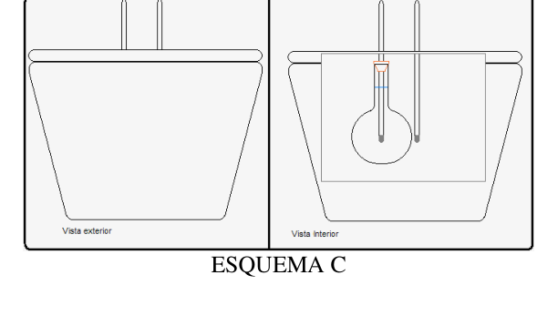
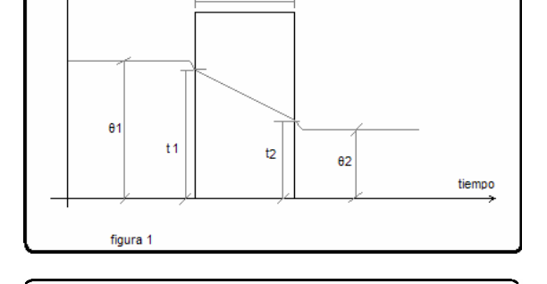
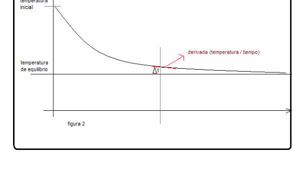

PE34 Coeficiente de transmision total agua-vidrio-agua
PE34. Ciudad de Buenos Aires. Verde.
Introducción teórica La diferencia de temperaturas entre dos puntos de un sistema provoca el pasaje de una cantidad de calor en el sentido de las temperaturas decrecientes. Si la temperatura de cada punto permanece invariable con el tiempo, la cantidad de calor es totalmente transmitida; en consecuencia, la temperatura de cada punto es solo función de sus coordenadas: t=f(x;y;z); en este caso, el régimen de transmisión de calor se llama estacionario. En cambio, si la temperatura de cada punto varia con la s coordenadas y además con el tiempo, la cantidad de calor no es transmitida totalmente, t=f(x;y;z;τ); en este caso el régimen se llama variable.
Formas de transmisión de Calor
Conducción
Se produce por intercambio de energía cinética molecular. La transmisión se efectúa sin que varíen las
posiciones relativas de las partículas del cuerpo, sea este sólido, líquido o gas. Se efectúa a través del
mismo y predomina en los sólidos. La expresión matemática conocida como la ley de Fourier, rige
este fenómeno:
∆Q σt
---- = - λ x ∆S x ----
∆ζ σe
Donde:
λ = Coeficiente de conducción
∆S = Superficie de contacto
σe = espesor
∆Q = Cantidad de calor transferida
σt = diferencial de temperatura
∆ζ = Tiempo
Conveccion
Cuando un cuerpo en estado fluido se pone en contacto con una superficie sólida cuya temperatura es
distinta de la propia se produce un intercambio de calor que hará variar su estado térmico y por lo
tanto su peso especifico relativo, provocando un desplazamiento de la porción que intercambia calor,
creando un movimiento en el fluido. Este proceso se denomina conveccion. La expresión matemática
conocida como la ley de Newton, rige este fenómeno:
∆Q
---- = - h x ∆S x (t2-θ2)
∆ζ
Donde: h = Coeficiente de conveccion
∆S = Superficie de contacto ∆Q = Cantidad de calor transferida ∆ζ = Tiempo (t2-θ2) = Diferencial de temperatura
Transmisión de calor a traves de una pared indefinida de caras paralelas y planas.
Cuando dos fluidos de temperatura θ1 y θ2 uniformes, siendo θ1 > θ2 estan separadas por una pared de
espesor e como la que indica la figura 1, la cantidad de calor transmitida a traves de la pared por
unidad de tiempo en una superficie se puede escribir:
∆Q
---- = k x ∆S x (θ1 -θ2)
∆ζ
donde
k = Coeficiente de transmisión total
∆S = Superficie de contacto
∆Q = Cantidad de calor transferida
∆ζ = Tiempo
(θ1 -θ2) = Diferencial de temperatura
(Esto esta relacionado con los coeficientes de conducción de la pared λ y de conveccion aparente de las superficies.)
Enfriamiento de un cuerpo Si se tiene un cuerpo de superficie S y masa m con una temperatura superficial inicial tc y se lo sumerge en el seno de un fluido infinito de temperatura uniforme θ, si resultara ser que tc > θ el cuerpo se enfriaría, siguiendo en el tiempo la ley que se muestra en la figura 2, y cuya expresión matematica se deduce a continuación
Planteamos un balance, sabiendo que el calor cedido por el cuerpo es total y exclusivamente recibido por el fluido:
- m (masa) x C (calor especifico) x dt (diferencial de temperatura) = hap (coeficiente de transmisión aparente) x S (superficie) x (t- θ ) x dζ (diferencial de tiempo)
Ordenando las variables queda:
dt hap x S x dζ
-------- = - --------------- (t- θ ) m
Integrando ambos miembros entre t0 y t :
t
ζ
dt hap x S x dζ
-------- = - -----------
(t- θ ) m
t0
ζ0
Aplicando el antilogaritmo en ambos miembros, operando matemáticamente, podemos llegar a la siguiente expresión,:
∆Q ∆Q
---- = hap x S x (t -ta) = ------
∆ζ ∆ζ ζ1
Materiales a Utilizar:
1 Calorímetro con tapa 2 termómetros 1 balón de 50 ml Agua cantidad necesaria 1 tapón de goma 1 Trípode 1 Pinza con nuez 1 Mechero 1 Tela metálica Hojas milimetradas 1 Cronometro 1 probeta de 1 L 1 vaso de precipitados 500 ml Servilletas de papel 1 calibre
Objetivo del práctico Determinar el coeficiente de transmisión total agua – vidrio - agua
Desarrollo Práctico:
1- Se introduce agua dentro del calorímetro, la cantidad necesaria para que el balon quede sumergido, se mide la cantidad de agua colocada y se toma la temperatura (ta) 2- Se llena el balón con 50 ml de agua, se lo cierra con un tapón que sostiene un termómetro, tener la precaución que el bulbo quede en el centro del balón. 3- Se calienta a baño María, hasta una temperatura mayor a los 95 °C, se lo retira del baño María, se lo seca, se lo coloca en el calorímetro. Deberán tenerse los elementos dispuestos como demuestra el esquema C. Precauciones: a) El agua del calorímetro debe cubrir el balón completamente b) Los bulbos de los termómetros deben estar a la misma altura c) El termómetro del calorímetro debe estar lo mas cerca posible del calorímetro sin tocarlo 4- en el instante en el que el balón se introduce en el calorímetro, se pone en marcha el cronometro. No debe agitarse. Se anotan lecturas de los dos termómetros a intervalos de 30 segundos hasta el momento en que la diferencia de temperatura del balón y la temperatura del calorímetro sea alrededor de 2 grados. 5- Se mide con calibre el diámetro del balón (D). (Efectuar varias mediciones y promediarlas, tener en cuanta el error de medición)
Desarrollo teórico
1- Con la tabla de valores ζ vs. Tb. (temperaturas del balón) y tc (temperatura del calorímetro) se
trazan en un mismo grafico de enfriamiento del balón y de calentamiento del calorímetro.
2- Para un instante ζ1 se puede plantear la siguiente ecuación de transmisión de calor por conveccion
según:
∆Q
---- = k x ∆S x (tb-tc) i
∆ζ
donde k es el coeficiente de transmisión total de agua – vidrio - agua
3- Para el mismo instante ζ1 se puede plantear una ecuación calorimétrica según:
∆Q
σt
---- = masaagua x Calor especificoagua x ---- ∆ζ
σζ i
4- Igualando miembro a miembro y efectuando el despeje correspondiente del coeficiente K se obtiene:
σt
masaagua x Calor especificoagua x ----
σζ
k = ---------------------------------------------------
S x (tb-tc)
5- El diferencial de temperaturas (tb-tc) y la derivada σt puede medirse sobre el grafico
o calcularse a partir de la tabla de valores.
---
σζ
6- La superficie S se calcula con: S = π x r 2
7- Se calcula K
8- Determinar el error de K.
ESQUEMA C



Topic: Thermodynamics Metodi: First Law of Thermodynamics, Graph Linearization, Experimental Data Analysis Competenze: Physical Reasoning, Experimental Data Analysis Objects: Calorimeter Fonte: Testo (PDF) — p.1
PE34 Coefficiente di trasmissione totale acqua-crisso-acqua
PE34. Città di Buenos Aires. Verde.
Introduzione teorica La differenza di temperatura tra due punti di un sistema provoca il passaggio di una quantità di calore in senso di diminuzione delle temperature. Se la temperatura di ogni punto rimane In questo modo, la temperatura è sempre più elevata e la temperatura è più elevata. La temperatura di ogni punto è solo una funzione delle sue coordinate: t=f(x;y;z); in questo caso, il regime di La trasmissione di calore si chiama stazionaria. Invece, se la temperatura di ogni punto varia con le s coordinate e anche con il tempo, la temperatura varia con il tempo. La quantità di calore non viene trasmessa completamente, t=f(x;y;z;τ); in questo caso il regime è chiamato variabile.
Forme di trasmissione del calore Conducere Si produce mediante lo scambio di energia cinetica molecolare. La trasmissione è effettuata senza variare le le posizioni relative delle particelle del corpo, sia esso solido, liquido o gas. Si effettua attraverso il e che è prevalente nei solidi. L’espressione matematica nota come legge di Fourier, regola Questo fenomeno: ∆Q σt ---- = - λ x ∆S x ---- ∆ζ σe Dove: λ = Coefficiente di guida ∆S = superficie di contatto σe = spessore ∆Q = quantità di calore trasferita σt = differenziale di temperatura ∆ζ = Tempo
Convezione
Quando un corpo in stato fluido entra in contatto con una superficie solida la cui temperatura è
La temperatura variabile è la temperatura del corpo, che varia in modo significativo.
sia il loro peso relativo specifico, causando un spostamento della porzione che scambia calore,
creando un movimento nel fluido. Questo processo è chiamato convezione. L’espressione matematica
nota come legge di Newton, regge questo fenomeno:
∆Q
---- = - h x ∆S x (t2-θ2)
∆ζ
Dove: h = Coefficiente di convezione
∆S = superficie di contatto ∆Q = quantità di calore trasferita ∆ζ = Tempo (t2-θ2) = differenziale di temperatura
Trasmissione di calore attraverso un muro indefinito di facce parallele e piane.
Quando due fluidi di temperatura θ1 e θ2 sono uniformi, essendo θ1 > θ2 separati da un muro di
spessore e come indicato in figura 1, la quantità di calore trasmessa attraverso il muro da
unità di tempo su una superficie si può scrivere:
∆Q
---- = k x ∆S x (θ1 -θ2)
∆ζ
dove
k = Coefficiente di trasmissione totale
∆S = superficie di contatto
∆Q = quantità di calore trasferita
∆ζ = Tempo
(θ1 -θ2) = differenziale di temperatura
(Questo è correlato ai coefficienti di conduzione del muro λ e di convezione apparente di le superfici.)
- Il raffreddamento di un corpo. Se si ha un corpo di superficie S e massa m con una temperatura superficiale iniziale tc e si lo immerge nel seno di un fluido infinito a temperatura uniforme θ, se si rivela che tc > θ il corpo si raffredderebbe, seguendo nel tempo la legge mostrata nella figura 2, e la cui espressione matematica si deduce di seguito
Si pone un equilibrio, sapendo che il calore ceduto dal corpo è totale ed esclusivamente ricevuto. per il fluido:
- m (massa) x C (calore specifico) x dt (diferenziale di temperatura) = hap (coefficiente di trasmissione apparente) x S (superficia) x (t- θ) x dζ (diferenziale di tempo)
Ordine le variabili:
dt hap x S x dζ -------- = - --------------- (t- θ ) m
Integrando entrambi i membri tra t0 e t:
t
ζ
dt hap x S x dζ
-------- = - -----------
(t- θ ) m
t0
ζ0
Applicando l’antilogaritmo su entrambi gli arti, operando matematicamente, possiamo arrivare alla la seguente espressione:
∆Q ∆Q ---- = hap x S x (t -ta) = ------ ∆ζ ∆ζ ζ1
Materiali da utilizzare:
1 calorimetro con copertura 2 termometri 1 pallone di 50 ml Quantità di acqua necessaria 1 tappo di gomma 1 Tripiede 1 pinza con noci 1 Mechero 1 Tessuto metallico Foli millimetrici 1 Cronometro 1 prova di 1 L 1 bicchiere di precipitati 500 ml Servetti di carta 1 calibro
Obiettivo del pratico Determinare il coefficiente di trasmissione totale acqua vetro - acqua
Sviluppo pratico:
1- Si inserisce acqua nel caloriometro, la quantità necessaria per immergere il pallone, si misura la quantità di acqua immessa e si prende la temperatura (ta) 2- Riempi il pallone di 50 ml di acqua, chiudile con un tappo che supporta un termometro, precauzione: il bulbo rimanga al centro della palla. 3- Si riscaldano in bagno Maria, fino a una temperatura superiore a 95 °C, si ritira dal bagno Maria, si Se seccato, viene messo nel calometro. Gli elementi devono essere disposti come dimostrato dal schema C. Precauzioni: a) L’acqua del calometro deve coprire completamente la palla. b) Le lampadine dei termometri devono essere uguali. c) Il termometro del calometro deve essere il più vicino possibile al calometro senza toccarlo. 4- il momento in cui la palla viene inserita nel caloriometro, il cronometro viene avviato. Non deve agitarsi. Le letture dei due termometri sono riportate a intervalli di 30 secondi fino al Il momento in cui la differenza di temperatura del pallone e della temperatura del calometro è intorno di 2 gradi. 5- Si misura con calibro il diametro della palla (D). (Fare varie misurazioni e misurare, avere in quanto è errore di misura)
Sviluppo teorico
1- Con la tabella di valori ζ vs. Tb. (temperature della palla) e tc (temperature del caloriometro) si
tracciano nello stesso grafico il raffreddamento della palla e il riscaldamento del calometro.
2- Per un istante ζ1 si può sollevare la seguente equazione di trasmissione di calore per convezione
secondo:
∆Q
---- = k x ∆S x (tb-tc) i
∆ζ
dove k è il coefficiente di trasmissione totale di acqua vetro - acqua
3- Per lo stesso istante ζ1 si può formulare un’equazione calorimetrica secondo:
∆Q
σt
---- = massa acqua x calore specifico acqua x ---- ∆ζ
σζ i
4- Pareggiando membro a membro e effettuando il corrispondente sgorgamento del coefficiente K se ottiene:
σt
massa acqua x Calore specifico acqua x ----
σζ
k = ---------------------------------------------------
S x (tb-tc)
5- La differenza di temperatura (tb-tc) e la derivata σt possono essere misurate sul grafico o si calcola a partire dal tabella dei valori. ---
σζ
6- La superficie S è calcolata con: S = π x r 2
7- Calcolato K
8- Determinare l’errore di K.
ESCEMO C
Topic: Thermodynamics Metodi: First Law of Thermodynamics, Graph Linearization, Experimental Data Analysis Competenze: Physical Reasoning, Experimental Data Analysis Objects: Calorimeter Fonte: Testo (PDF) — p.1
The total transmission coefficient of water-glass-water **
PE34. City of Buenos Aires. Green, please.
Theoretical introduction The difference in temperature between two points in a system causes the passage of a quantity of heat in the direction of decreasing temperatures. If the temperature of each point remains The amount of heat is fully transmitted; consequently, the The temperature of each point is only a function of its coordinates: t=f(x;y;z); in this case, the regime of heat transmission is called stationary. If the temperature of each point varies with the s coordinates and also with time, the The amount of heat is not fully transmitted, t=f(x;y;z;τ); in this case the regime is called variable.
Heat transmission modes Driving It is produced by the exchange of molecular kinetic energy. Transmission is carried out without variation in the relative positions of body particles, whether solid, liquid or gas. It is carried out through the It is the same and predominant in solids. The mathematical expression known as Fourier’s law, governs This phenomenon: ∆Q σt ---- = - λ x ∆S x ---- ∆ζ σe Where: λ = Driving coefficient ∆S = Contact area σe = thickness ∆Q = Amount of heat transferred σt = temperature differential ∆ζ = Time
Convection
When a fluid body comes into contact with a solid surface whose temperature is
The heat exchange is different from the heat exchange itself and will vary its thermal state.
both their relative specific weight, causing a shift in the heat exchanging portion,
creating movement in the fluid. This process is called convection. The mathematical expression
known as Newton’s law, governs this phenomenon:
∆Q
---- = - h x ∆S x (t2-θ2)
∆ζ
Where: The value of the input coefficient shall be the sum of the values of the input coefficients.
∆S = Contact area ∆Q = Amount of heat transferred ∆ζ = Time (t2-θ2) = Temperature differential
Heat transmission through an indefinite wall of parallel and flat faces.
When two uniform temperature fluids θ1 and θ2 being θ1 > θ2 are separated by a wall of
thickness and as shown in Figure 1, the amount of heat transmitted through the wall by
unit of time on a surface can be written as:
∆Q
---- = k x ∆S x (θ1 -θ2)
∆ζ
Where
k = Total transmission coefficient
∆S = Contact area
∆Q = Amount of heat transferred
∆ζ = Time
(θ1 -θ2) = temperature differential
(This is related to the coefficients of the wall’s conduction λ and apparent convection of the surfaces.)
A body ‘s cooling down . If you have a surface body S and mass m with an initial surface temperature tc and you get it It is immersed in the breast of an infinite fluid of uniform temperature θ, if it turns out that tc > θ the body It would cool down, following the law shown in Figure 2, and whose mathematical expression The following is deduced
We set a balance, knowing that the heat given by the body is total and exclusively received. by fluid:
- m (mass) x C (specific heat) x dt (temperature differential) = hap (transmission coefficient (Apparent) x S (surface) x (t- θ) x dζ (time differential)
The ordering of the variables is:
The Commission shall adopt implementing acts in accordance with Article 21 of this Regulation. -------- = - --------------- (t- θ ) m
Integrating both members between t0 and t:
t
ζ
The Commission shall adopt implementing acts in accordance with Article 21 of this Regulation.
-------- = - -----------
(t- θ ) m
t0
ζ0
Applying the antithesis to both limbs, operating mathematically, we can get to the the following expression:
∆Q ∆Q ---- = hap x S x (t -ta) = ------ ∆ζ ∆ζ ζ1
Materials to be used:
1 Calorimeter with lid Two thermometers . 1 50 ml ball Water quantity required 1 rubber stopper 1 Tripod 1 pinza with nut 1 Mechero 1 Metallic fabric Millimeter sheets 1 Timekeeper 1 sample of 1 L 1 glass of precipitated 500 ml Paper napkins . 1 caliber
Objective of the practical Determine the total transmission coefficient water glass - water
Practical development:
1- Water is inserted into the calorimeter, the amount needed for the balloon to be submerged, measure the amount of water placed and take the temperature (ta) 2- Fill the balloon with 50 ml of water, close it with a cap that holds a thermometer, have the The bulb should be kept in the center of the ball. 3- It is heated in the bathroom Maria, to a temperature above 95 °C, is removed from the bathroom Maria, is removed from the bathroom Maria, is removed from the bathroom Maria, is removed from the bathroom Maria, is removed from the bathroom Maria, is removed from the bathroom Maria, is removed from the bathroom Maria, is removed from the bathroom Maria, is removed from the bathroom Maria, is removed from the bathroom Maria, is removed from the bathroom Maria, is removed from the bathroom Maria, is removed from the bathroom Maria, is heated to a temperature above the bathroom Maria, is heated to a temperature above the bathroom Maria, is heated to a temperature above the bathroom Maria, is heated to a temperature above the bathroom Maria, is heated to a temperature above the bathroom Maria, is heated to the bathroom Maria, is heated to the bathroom Maria, is heated to the bathroom Maria, is heated to the bathroom Maria, is heated to the bathroom Maria, is heated to the bathroom, is heated to the bathroom, and is heated to the bathroom, and is heated to the bathroom, and is heated to the bathroom, and is heated to the bathroom, and is heated to the bathroom, and is heated to the bathroom, and is heated to the bathroom. dry, put it in the thermometer. The elements must be in order as shown by the Scheme C. Precautions: (a) The water from the thermometer must cover the ball completely (b) The bulbs of the thermometers must be at the same height. (c) The thermometer of the thermometer shall be as close as possible to the thermometer without touching it. 4- the moment the ball is inserted into the calorimeter, the timer is started. You must not be agitated. Readings of the two thermometers are recorded at 30-second intervals until the thermometer is The time when the difference in temperature between the ball and the temperature of the thermometer is around two degrees. 5- The diameter of the ball (D) is measured by caliber. (Effect several measurements and average them, have in the measurement error is calculated)
Theoretical development
1- With the ζ vs. Tb. (ball temperatures) and tc (calorometer temperature) are
They’re mapping the cooling of the ball and the heating of the calorimeter into the same chart.
2- For an instant ζ1 the following convection heat transfer equation can be put forward
according to:
∆Q
---- = k x ∆S x (tb-tc) i
∆ζ
where k is the total transmission coefficient of water glass - water
3- For the same instant ζ1 a calorimetric equation can be proposed according to:
∆Q
σt
---- = mass of water x specific heat of water x ---- ∆ζ
σζ i
4- Equalizing member to member and clearing the corresponding Kse coefficient It gets:
σt
Mass water x specific heat water x ----
σζ
k = ---------------------------------------------------
S x (tb-tc)
5- The temperature differential (tb-tc) and the derivative σt can be measured on the graph or calculated from the table of values. ---
σζ
6- The surface S is calculated by: S = π x r 2
7- Calculate K
8- Determine the error of K.
The Commission shall adopt implementing acts in accordance with Article 21 of this Regulation.
Topic: Thermodynamics Metodi: First Law of Thermodynamics, Graph Linearization, Experimental Data Analysis Competenze: Physical Reasoning, Experimental Data Analysis Objects: Calorimeter Fonte: Testo (PDF) — p.1